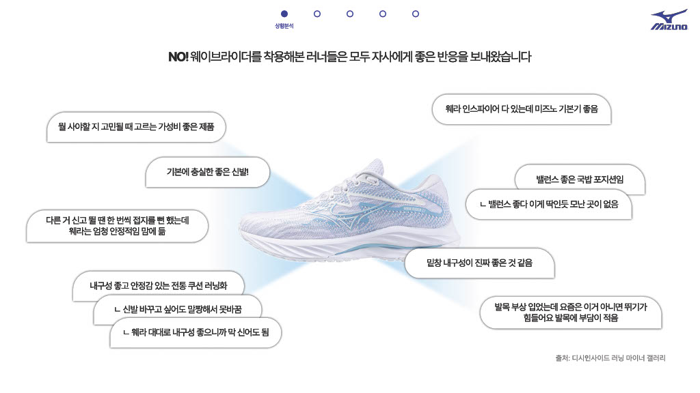
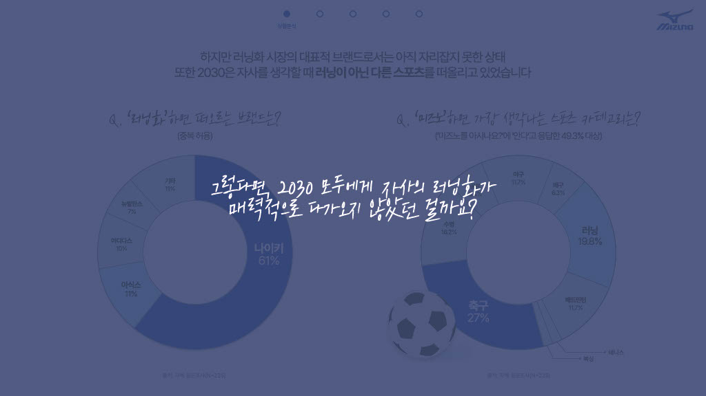
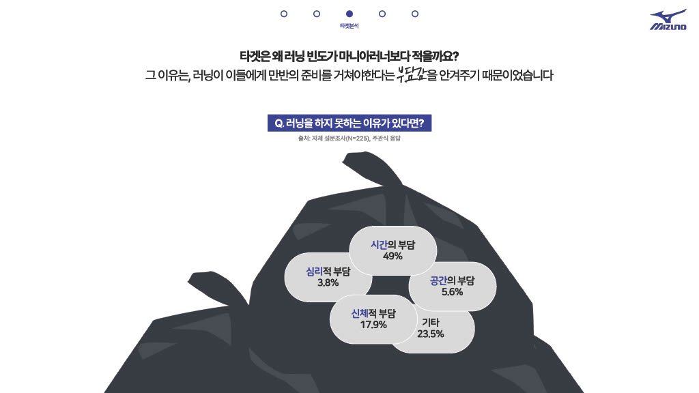
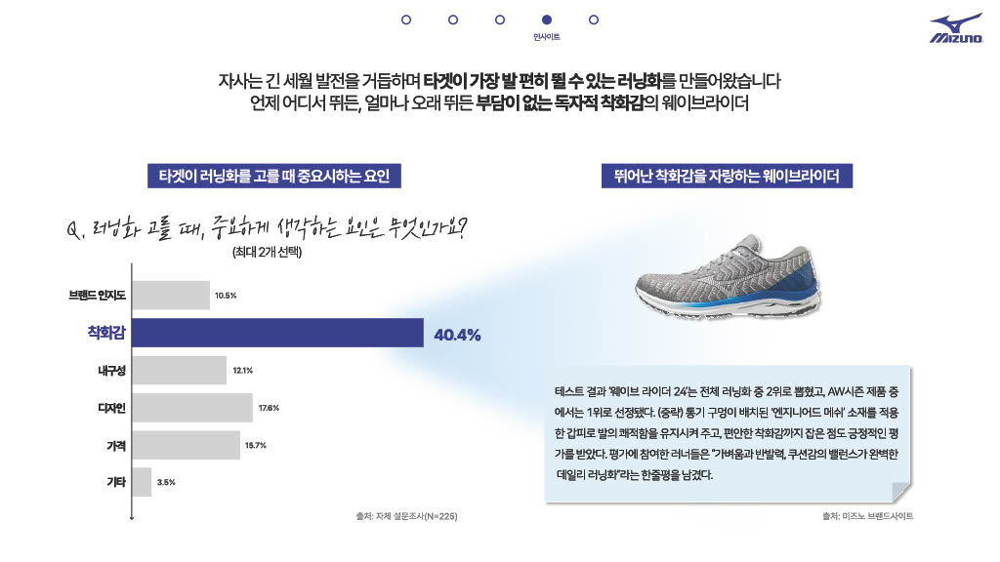
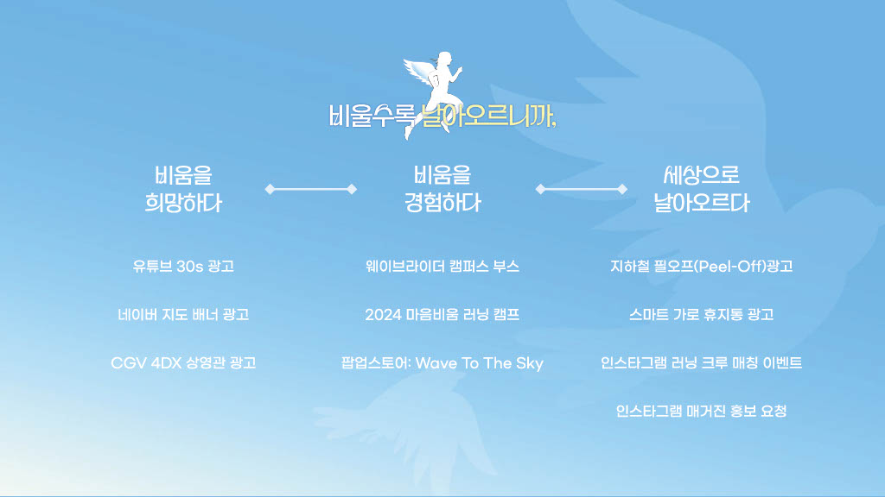
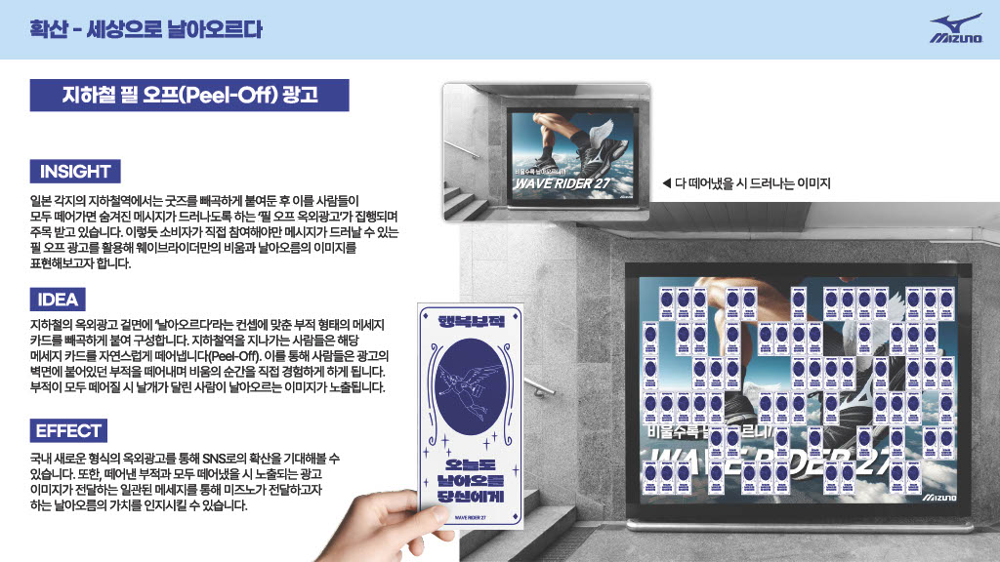
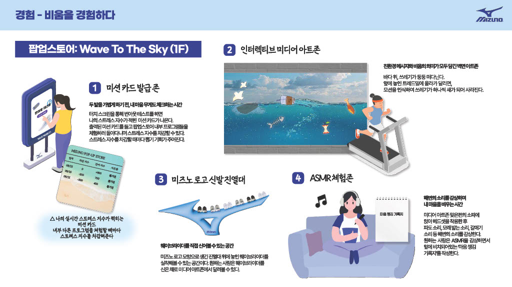
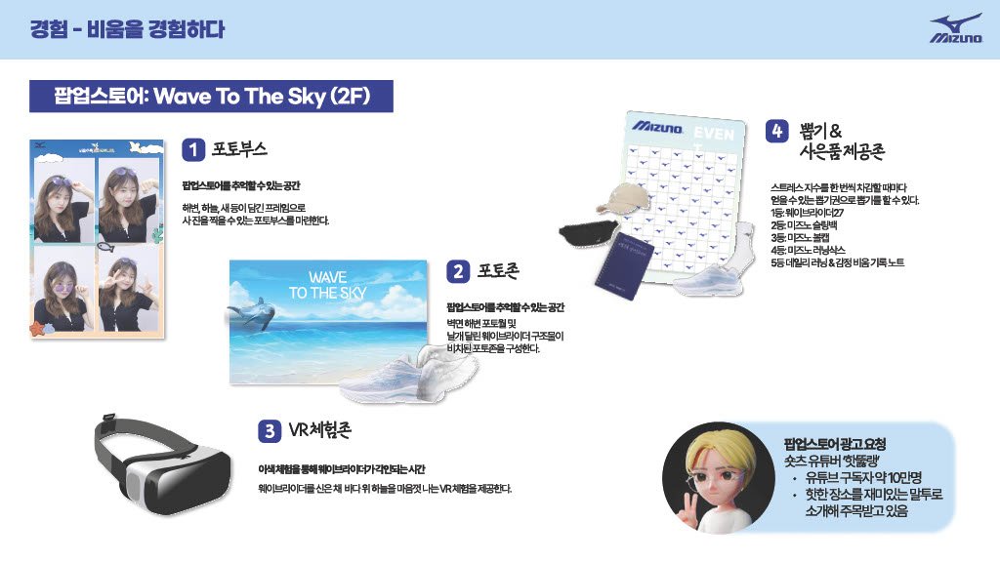

한국미즈노 경쟁PT 🏆 우수상 · 2위
225명 설문과 10명 FGI를 통해 미즈노의 문제를 비마니아 고객과의 거리에서 찾았습니다. 러닝에 관심은 있지만 꾸준히 뛰지 않는 2030에게 러닝이 또 하나의 자기관리 과제로 느껴진다는 점을 발견하고, 이를 '일상의 부담을 비우는 활동'으로 재정의했습니다. 이후 웨이브라이더의 편안한 착화감과 연결해 '비울수록 날아오르니까'라는 캠페인 전략을 제안했습니다.
Problem & Target
실제 웨이브라이더 사용 경험에서는 편안한 착화감, 안정성, 내구성, 밸런스 등 제품 자체에 대한 긍정적인 평가가 반복됐습니다.

하지만 자체 조사 225명에서 러닝화를 떠올릴 때 나이키가 61%로 가장 높은 비중을 차지했고, 미즈노를 알고 있는 응답자도 러닝 외 다른 스포츠를 먼저 떠올리는 경우가 있었습니다.

제품의 매력이 러닝 마니아 밖의 고객에게 충분히 전달되지 않고 있다는 것을 핵심 문제로 정의했습니다.
러닝 관심도와 지속도를 기준으로 세분화한 뒤, 라이트 러너(28.4%)와 마일드 러너(24.9%)를 핵심 타깃으로 설정했습니다.
Main Insight

"좋아하는데 왜 자주 뛰지 않을까?"
러닝은 건강한 활동이지만, 자기관리를 계속 요구받는 2030에게는
또 하나의 '해야 할 일'로 느껴질 수 있었습니다.
Reframing & Product Fit
자체 조사에서 러닝화 구매 시 중요하게 보는 요인 중 40.4%가 착화감으로 가장 높았습니다.
웨이브라이더의 강점은 편안한 착화감과 쿠션, 안정성의 균형입니다.

제품의 기능적 강점을 '발도 마음도 부담 없이 달리는 경험'으로 확장했습니다.
Campaign Concept

대표 실행안 · Result
지하철 Peel-Off 광고
'비움'이라는 메시지를 광고를 보는 행동 자체로 경험하게 했습니다. 지하철 광고판 위에 사람들이 일상에서 떨쳐내고 싶은 감정을 담은 부적 형태의 메시지 카드를 붙이고, 지나가는 사람이 카드를 하나씩 직접 떼어갈수록 광고판이 점점 비워집니다. 마지막 카드가 사라지면 뒤에서 날아오르는 이미지가 드러납니다.

캠페인 메시지를 카피로 설명하는 데서 끝내지 않고, 광고 매체의 작동 방식 자체를 '비움'이라는 경험으로 설계했습니다.


세부 IMC 실행안은 팀원들과 공동으로 발전시켰습니다.
성과
내 역할